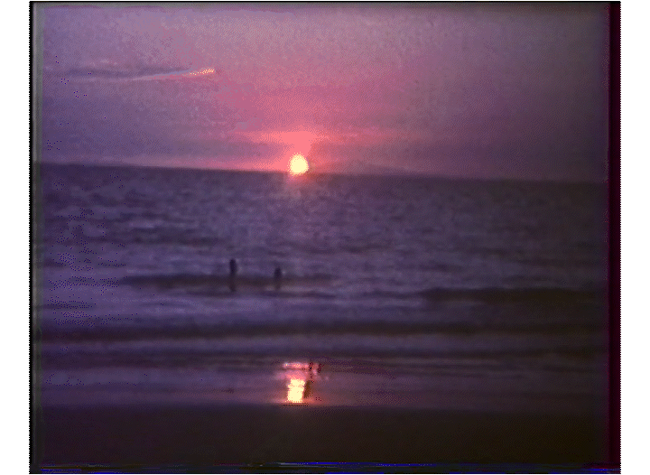

My name's Ernest Nabialek. I'm a film director who works across short films (hopefully soon a feature), documentaries, and work for clients. While they may all feed into each other, I view them all as separate fields of work that, as such, can have very different styles from each other.
My short film work is where I really go off. A common thread is a reflection on film itself as a medium, because that's a question that really obsesses me. Why do we make films, what does image mean in our century? Our society is one of image, and as such I think it's essential to question these things. As you can probably tell from the layout of the website, our relationship with technology, is something that I want to explore in that work. I'm 26, so old enough to remember the internet before social media, but not old enough to remember a time before the internet. In other words, technology has been a key aspect of my reality since I was born. One of my earliest memories (I think it might be my earliest but that could be romanticising it) is opening my mum's computer when I was 2 or 3 years old and being amazed by the Windows background with the green hills. This is probably less obvious in what I've made so far, but I think it feeds into the fragmented sense of reality in both Someone and Clean Your Room.
My documentary work is a bit more grounded. I focus mostly on local themes of community and artistic creation. It's also just an opportunity for me to tell the stories of cool people I meet. My goal for the future is to strengthen their social aspect.
I try and bring the best of both to my client work, which mainly focuses on events and commercials. I understand that here you're working within a commercial structure, but I also think there's a need for artistic creativity within that. The goal of an ad is not just to score well with social media algorithms, it's to be memorable, which is a specific challenge with the oversaturation of images and AI slop on these platforms. I'm saying this more as encouragement to any artists reading this than as a pitch to potential clients: know your worth. It's never been more valuable to be genuinely creative.
I want to make art because art is the way humans express the world around them, so I'll just finish with a few words about how I see it. As we've grown older the world has increasingly become a dark confusing place, but it's not as bleak as it seems. I really believe that one day in our lifetime we'll look back at capitalism and the techno-fascist society it's created and laugh at its absurdity. In the meantime, there'll always be sunsets.
